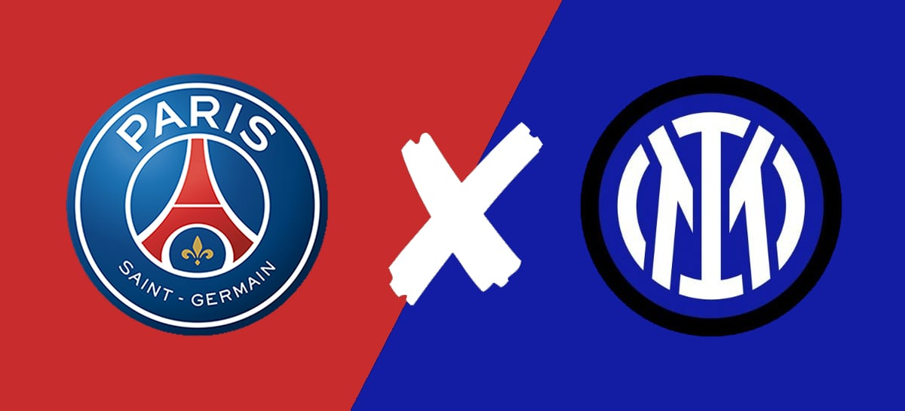
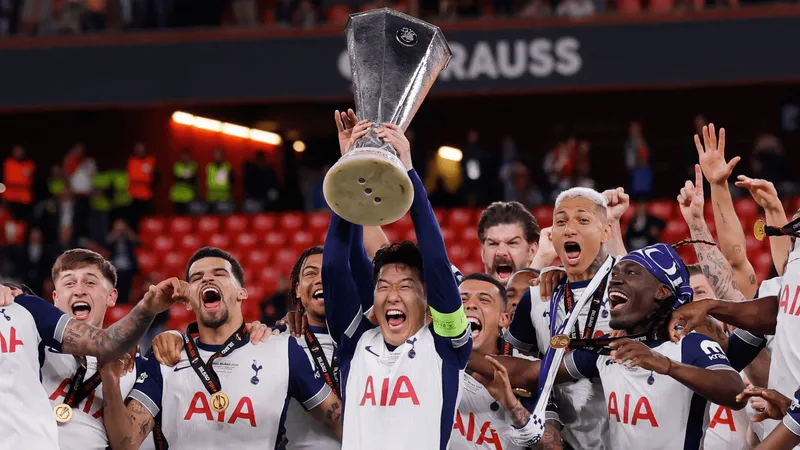
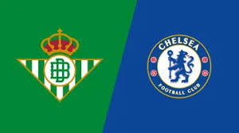
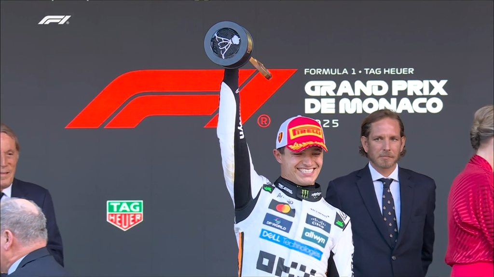
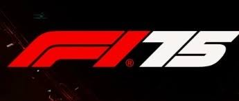

🏁 Bem-vindo ao PIT STOP FC
O seu portal definitivo de Futebol e Fórmula 1, reunindo informações, estatísticas e notícias em um só lugar.
⚽ Destaques do Futebol Europeu
- PSG enfrenta a Inter de Milão na grande final da UEFA Champions League 2025 no dia 31 de maio, às 16h (horário de Brasília), no Allianz Arena, em Munique. A partida será transmitida ao vivo pelo SBT e TNT Sports.
- Sporting CP venceu o Benfica por 1 a 0 na final da Taça de Portugal, conquistando o título nacional.
- Chelsea garantiu vaga na UEFA Champions League da próxima temporada ao vencer o Nottingham Forest por 1 a 0 na última rodada da Premier League.
🏆 Final da UEFA Europa League
O Tottenham Hotspur foi o grande vencedor da final da UEFA Europa League 2025, derrotando o Manchester United por 1 a 0 e conquistando seu primeiro título europeu desde 1984.
🏆 Final da UEFA Conference League
O Chelsea enfrentará o Real Betis na final da UEFA Conference League 2025, marcada para o dia 28 de maio, às 16h (horário de Brasília), no Stadion Wroclaw, na Polônia.
🏎️ Últimas da Fórmula 1
- Lando Norris venceu o GP de Mônaco em 26 de maio, liderando todas as 78 voltas da corrida e conquistando sua segunda vitória na temporada.
- Charles Leclerc terminou em segundo lugar, garantindo pontos importantes para a Ferrari.
- Oscar Piastri completou o pódio em terceiro lugar, mantendo a liderança no campeonato.
- Max Verstappen terminou em quarto após uma estratégia desfavorável nos pit stops.
🏁 Classificação Mundial de Pilotos - Fórmula 1 (2025)
| Posição | Piloto | Equipe | Pontos |
|---|---|---|---|
| 1 | Oscar Piastri | McLaren-Mercedes | 161 |
| 2 | Lando Norris | McLaren-Mercedes | 158 |
| 3 | Max Verstappen | Red Bull Racing | 136 |
| 4 | George Russell | Mercedes | 99 |
| 5 | Charles Leclerc | Ferrari | 79 |